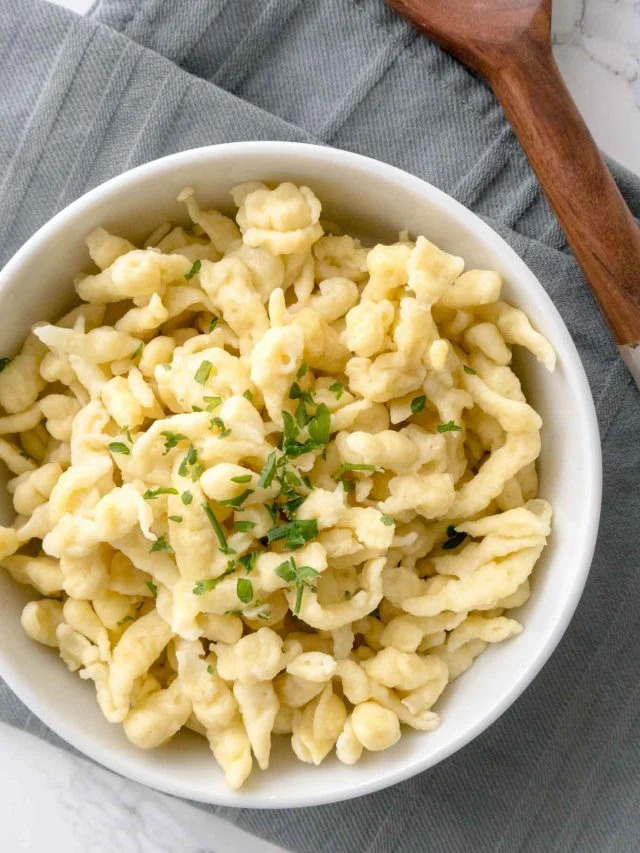

Spaetzle

Description
These small, irregularly shaped egg noodles are a staple in German cuisine, and with good reason. Made from simple
ingredients like flour, eggs, and milk, Spaetzle offers a satisfyingly chewy texture and a neutral flavor that pairs
perfectly with a variety of dishes. Whether you choose to serve them as a side dish with gravy, toss them with butter
and herbs, or incorporate them into casseroles, Spaetzle brings a touch of German coziness to every meal. Skip the store-
bought versions and experience the joy of crafting these delightful noodles from scratch. Our easy-to-follow recipe ensures
that you can enjoy the authentic taste of German comfort in the comfort of your own kitchen. The original recipe can be
found here.
Ingredients
- 500 g all-purpose flour
- 2 teaspoons salt
- 8 large eggs
- 180 ml milk, or water
Steps
- In a bowl, whisk together the flour, eggs, milk, and salt. Stir until the batter is well combined and develops bubbles.
You can also use a mixer. The batter should neither be too thin nor too thick or it will be difficult to make the
spaetzle with your spaetzle maker. Let the batter sit for 5-10 min.
- Put a colander into a bowl to drain the Spaetzle once cooked and bring a large pot of water over high heat to a boil,
add about 1 tablespoon of salt to the water, and reduce temperature to a simmer.
- Press batter through a spaetzle maker, a large holed sieve or colander into the simmering water.
- Work in batches, after using about ⅓ of the batter stop adding new spaetzle and let them cook for about 2-3 minutes,
or until they float to the top. Stir occasionally. Use a slotted spoon to transfer the spaetzle to the colander so
that excess water can drip off.
- Serve the spaetzle immediately or saute them in butter to crisp them up a little. If you don't serve or saute them
right away, add 1 or 2 tablespoons of butter to the hot spaetzle to prevent them from sticking together.
Home